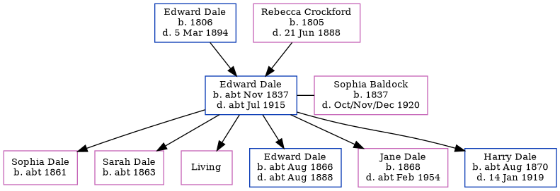

Edward Dale cNov 1837 - c1915
[ Home ] | [ Calendar ] | [ Surnames Index ] | [ Errors ] | [ Family History ]A bricklayer's labourer and the child of Edward Dale (an agricultural labourer) and Rebecca Crockford, Edward Dale, the three times great-uncle of Nigel Horne, was born in Chartham Hatch, Kent, England c. Nov 18371,2,3,4,5,6,7,8,9,10,11 and married Sophia Baldock (with whom he had 6 children: Sophia, Sarah A, Ann Rebecca, Edward, Jane Elizabeth and Harry Edgar, along with 1 surviving child) at St Gregory, Canterbury, Kent, England on 22 Sept 186013.
During his life, he was living in Chartham, Kent, England in 18411 and in 18512; at his birthplace on 30 Mar 185117; in Chartham in 18613; at Maygers Row in Chartham on 7 Apr 186116; at Modern Cottages, Wincheap Street, Thanington, Kent on 2 Apr 187115; in Canterbury in 18815; at Sturry Road in Canterbury on 3 Apr 188118; St Mary Northgate in Canterbury in 18916; in Canterbury in 19017; at Sturry Road in Canterbury on 31 Mar 190119; and in Canterbury on 2 Apr 19118.
He died c. Jul 1915 in Canterbury11,12 and was buried there at St Gregory the Great, Old Ruttington Lane on 6 Jul 191514.
Parents
- Edward was born in 1806
- Rebecca was born in 1805
Children
- Sophia was born c. 1861
- Sarah A was born c. 1863
- Edward was born c. Aug 1866
- Jane Elizabeth was born in 1868
- Harry Edgar was born c. Aug 1870
Citations
- 1841 England Census Online publication - Provo, UT, USA: The Generations Network, Inc., 2006.Original data - Census Returns of England and Wales, 1841. Kew, Surrey, England: The National Archives of the UK (TNA): Public Record Office (PRO), 1841. Data imaged from the National
- 1851 England Census Online publication - Provo, UT, USA: The Generations Network, Inc., 2005.Original data - Census Returns of England and Wales, 1851. Kew, Surrey, England: The National Archives of the UK (TNA): Public Record Office (PRO), 1851. Data imaged from the National
- 1861 England Census Online publication - Provo, UT, USA: The Generations Network, Inc., 2005.Original data - Census Returns of England and Wales, 1861. Kew, Surrey, England: The National Archives of the UK (TNA): Public Record Office (PRO), 1861. Data imaged from the National
- 1871 England Census Online publication - Provo, UT, USA: The Generations Network, Inc., 2004.Original data - Census Returns of England and Wales, 1871. Kew, Surrey, England: The National Archives of the UK (TNA): Public Record Office (PRO), 1871. Data imaged from the National
- 1881 England Census Online publication - Provo, UT, USA: The Generations Network, Inc., 2004. 1881 British Isles Census Index provided by The Church of Jesus Christ of Latter-day Saints © Copyright 1999 Intellectual Reserve, Inc. All rights reserved. All use is subject to the
- 1891 England Census Online publication - Provo, UT, USA: The Generations Network, Inc., 2005.Original data - Census Returns of England and Wales, 1891. Kew, Surrey, England: The National Archives of the UK (TNA): Public Record Office (PRO), 1891. Data imaged from The National
- 1901 England Census Online publication - Provo, UT, USA: The Generations Network, Inc., 2005.Original data - Census Returns of England and Wales, 1901. Kew, Surrey, England: The National Archives of the UK (TNA): Public Record Office (PRO), 1901. Data imaged from the National
- 1911 England Census Online publication - Provo, UT, USA: Ancestry.com Operations, Inc., 2011.Original data - Census Returns of England and Wales, 1911. Kew, Surrey, England: The National Archives of the UK (TNA), 1911. Data imaged from the National Archives, London, England.
- England & Wales births 1837-2006 - Findmypast
- England & Wales, FreeBMD Birth Index, 1837-1915 Online publication - Provo, UT, USA: The Generations Network, Inc., 2006.Original data - General Register Office. England and Wales Civil Registration Indexes. London, England: General Register Office. © Crown copyright. Published by permission of the Cont
- England & Wales, FreeBMD Death Index: 1837-1915 Online publication - Provo, UT, USA: The Generations Network, Inc., 2006.Original data - General Register Office. England and Wales Civil Registration Indexes. London, England: General Register Office. © Crown copyright. Published by permission of the Cont
- England & Wales deaths 1837-2007 - Findmypast
- England & Wales Marriages 1837-2005 - Findmypast
- Kent, Canterbury Archdeaconry Burials - Findmypast
- 1871 England, Wales & Scotland Census - Findmypast (was age 33 and the head of the household)
- 1861 England, Wales & Scotland Census - Findmypast (was age 23 and the head of the household)
- 1851 England, Wales & Scotland Census - Findmypast (was age 14 and the son of the head of the household)
- 1881 England, Wales & Scotland Census - Findmypast (was age 44 and the head of the household)
- 1901 England, Wales & Scotland Census - Findmypast (was age 64 and the head of the household)
- 1911 Census for England & Wales - Findmypast (was age 73 and the head of the household)
Media
England & Wales marriages 1837-2008 - BMD/M/1860/3/AZ/000460/035
Kent, Canterbury Archdeaconry marriages 1538-1928 - GBPRS/CANT/M/97076770/1
Kent, Canterbury Archdeaconry burials - GBPRS/CANT/D/95502445
England & Wales deaths 1837-2007 - BMD/D/1915/3/AZ/000199/095
England & Wales births 1837-2006 - BMD/B/1837/4/AZ/000166/114
1881 England, Wales & Scotland Census - GBC/1881/0004722234
1911 Census for England & Wales - GBC/1911/RG14/04332/0103/1
Family Tree
Map
Generated by ged2site. Last updated on Jul 3, 2024
Known Issues
Location for 6 Jun 1841 (Chartham, Kent, England) differs from mother's (Chartham Hatch, Kent, England)
Date of residence (1841) differs from mother's in same year (6 Jun 1841)
1841: Not living with either parent in childhood when aged 4
1851: Not living with either parent in childhood when aged 14
May have been living with mother on 30 Mar 1851, but the addresses don't match or aren't detailed enough to be sure
May have been living with father on 30 Mar 1851, but the addresses don't match or aren't detailed enough to be sure